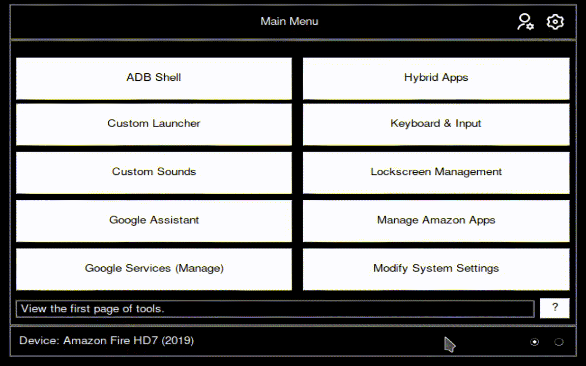

Switching Between Menu Pages

The Toolbox has an impressive amount of tools, with a solid count of 19, with each tool boasting their own subtools. However, only 10 tools can be displayed per Main Menu page. So you may be asking... where are the other 9 tools? If you look towards the bottom right of the window, you'll see two radio buttons sitting side by side. These radio buttons determine which page you're currently on. If the left radio button is selected, you're currently on the first page of tools, if the right is selected your on the 2nd page of tools. As the Toolbox grows, more pages may be added where needed. Try switching between pages 1 and 2 now.
×